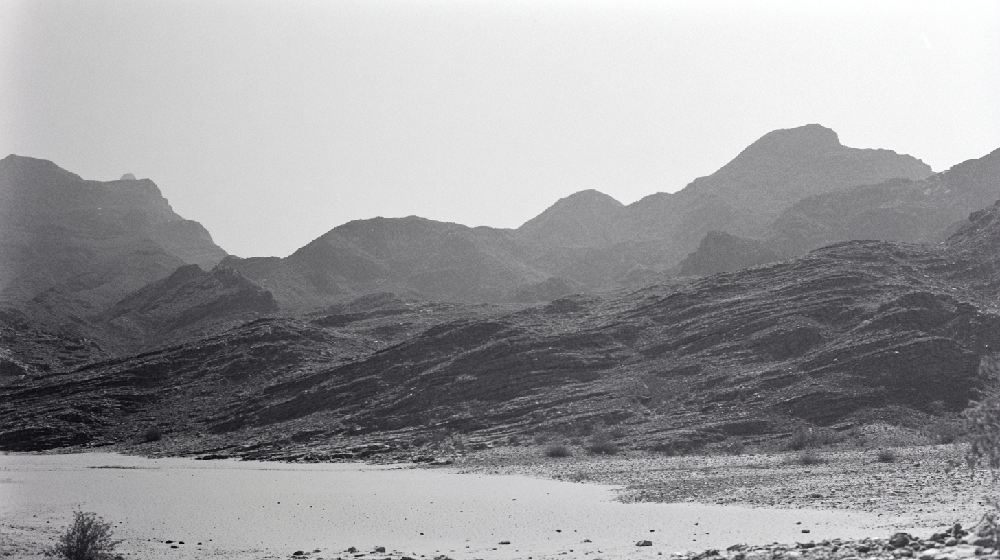
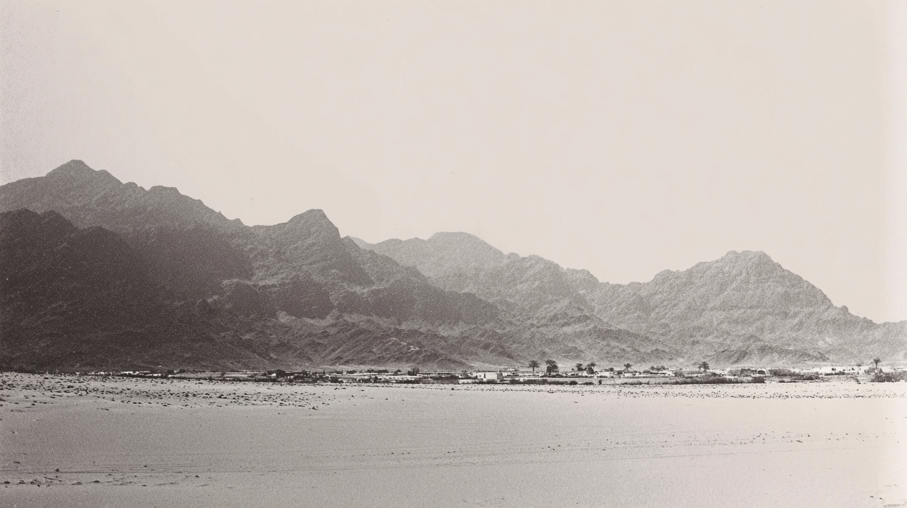

A quiet road runs through a wide desert valley dotted with low shrubs, with layered mountain ridges fading into the distance in soft monochrome tones.
A calm river runs through a rugged mountain valley in a grainy black-and-white photograph.
Rocky desert hills and overlapping mountain peaks fill the frame, captured in textured black and white with a dry riverbed in the foreground.
close up of desert landscape with mountains, layered mountains in the distance, imperfect framing, film style photography. black and white analog photograph, low contrast grading, soft highlights, hazy atmosphere, arid heat. warm sky, soft warm reflections of the sand. Light film grain, textured film with very fine dimples, organic texture, low digital sharpness, Shot like contemporary cinema, realistic.
desert landscape with mountains, imperfect framing, film style photography. black and white analog photograph, low contrast grading, soft highlights, hazy atmosphere, arid heat. warm sky, soft warm reflections of the sand. Light film grain, textured film with very fine dimples, organic texture, low digital sharpness, Shot like contemporary cinema, realistic.